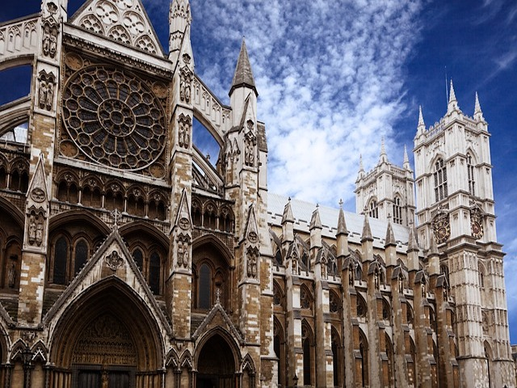
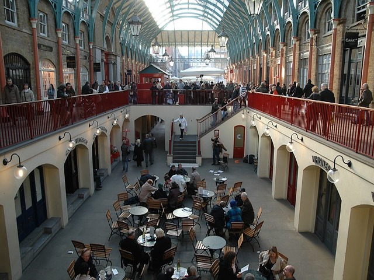

London
Tower Bridge

Tower Bridge is an iconic landmark and a great place to take pictures. You can go inside the bridge to learn more about the Victorian history of the landmark. They also offer tours including, personal guided tours, family tours, behind the scenes guided tours, and private evening guided tours. Of course, each of these options increases in price. While you are near the Tower Bridge, there are great options for drinks and food near the river.
Tower of London

Tower of London is another must-see while in England. The Tower of London had previously served as a fortress, royal palace, and prison. With your admission, you can view the Crown Jewels, wander through grounds and the White Tower, participate in Yeoman Warden tours where they will reveal stories of treachery and torture, and hear stories about the famous ravens.
Westminster
Westminster Abbey is open daily from 9:30am to 3:30pm for visits. The church was founded in 960AD, has been the coronation church since 1066, and is the resting place of more than 3,000 Britons. There is an admission price, which includes a multimedia guide for yourself. There are also guided tours several times a day and only cost an additional 7 pounds a person.
Imperial War Museum

Admission to the Imperial War Museum is free and offers a great selection of exhibits. You can see how different wars impacted England, especially World War I and World War II.
Cabinet War Rooms

The Cabinet War Rooms is a great place to visit, especially for those interested in history. The museum is not well publicized, so many people may have missed the opportunity to visit. The museum is Churchill’s historic underground bunker from World War II. You can see the map room, cabinet room, Churchill’s bedroom, and many other offices and facilities. During busy times of the year you should purchase tickets online before, as there are limited tickets available at the door.
Hampton Court

Hampton Court Palace was the home of Henry VIII and his eight wives. You can explore the Great Hall, Henry VIII’s Kitchens, the gardens and the maze, Chapel Royal, Great Watching Chamber, and William III’s apartments. Audio guide tours are included in admission prices and provide you with an opportunity to learn more about various aspects of the Palace.
Stonehenge
Stonehenge is a well known landmark and a great place to take family photos. If you are staying in London, Stonehenge is a day trip. Since it is a full day, it is well worth it to take a guided day trip that includes Windsor, Bath, and Stonehenge.
Covent Garden
Covent Garden is a great place to explore for both food and shopping. It is a car-free Piazza located in London’s West End. The location is right by the theatre district and also includes the London Transport Museum.
Portobello Road

The Portobello Road Market is a wonderful place to wander around. There are over 1000 sellers and includes antiques, arcades, fashion/clothing, fruits and vegetables, and other food items. Saturday is the best day to go, as the most amount of shops are open on that day of the week.